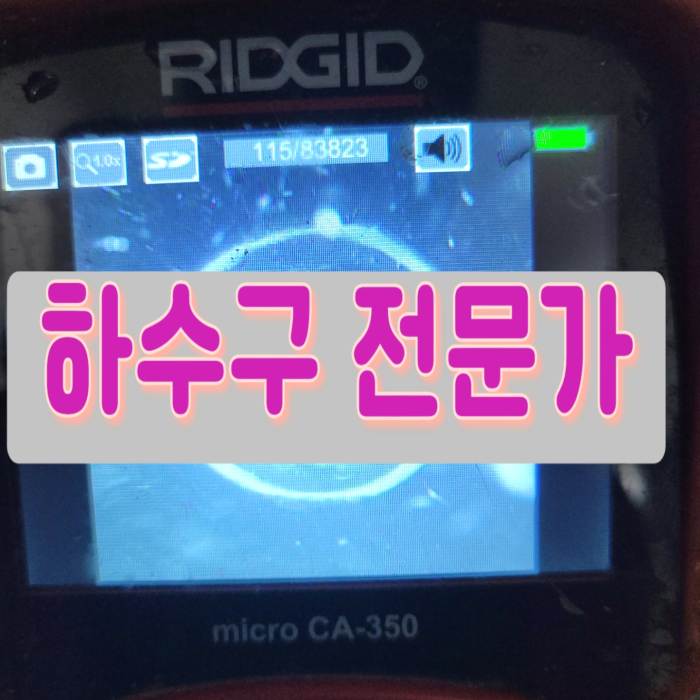
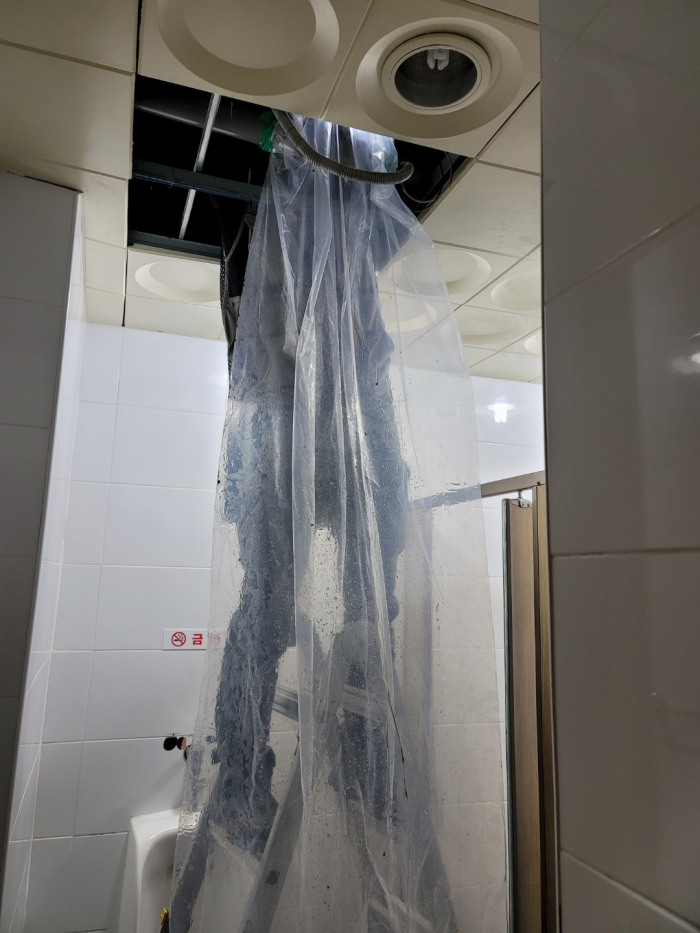
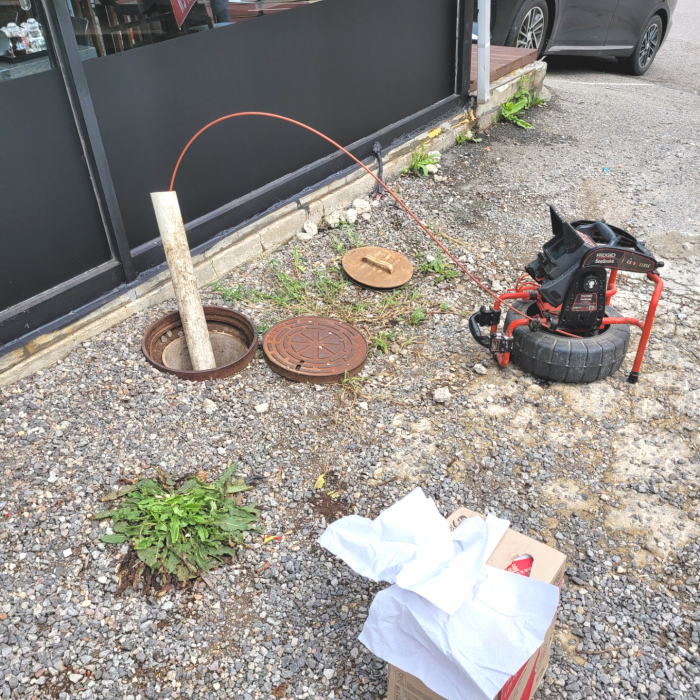
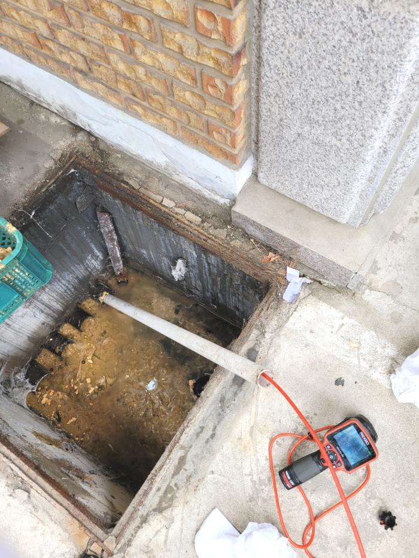
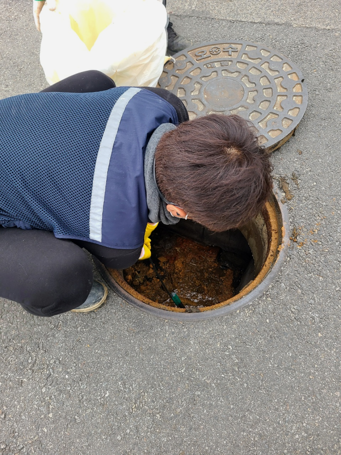
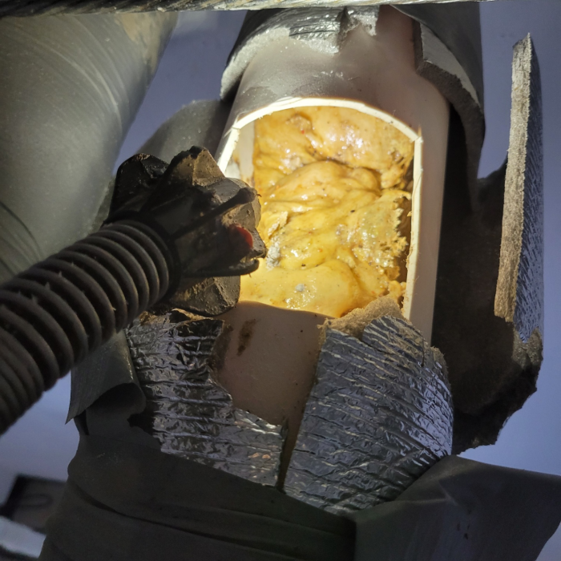
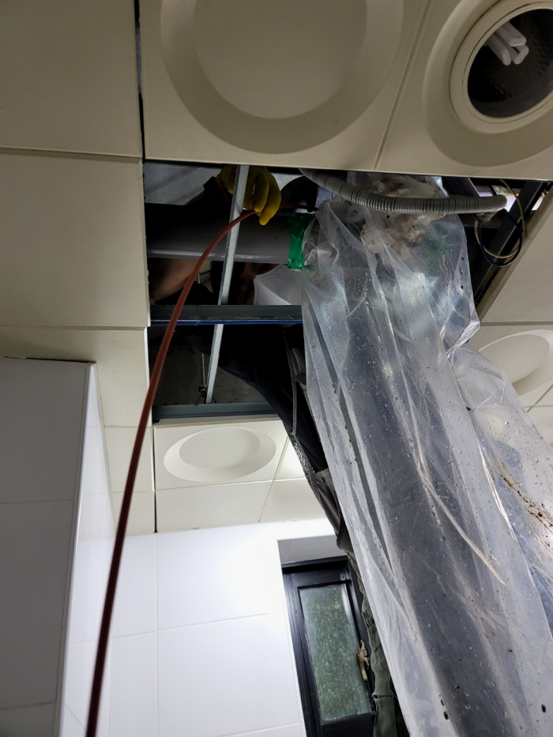

🏠 파주시 금촌동 배수구막힘 교하동 하수구뚫음 배관수리 설비공사
파주 싱크대막힘 전문 시공 후기

📋 작업 개요
- 위치: 파주
- 서비스 유형: 싱크대막힘, 변기막힘, 하수구막힘, 배관막힘, 누수수리, 역류해결, 뚫는업체, 배관청소, 고압세척, 설비공사
- 작업 일시: 2024. 2. 6. 18:41
- 업체명: 하수구수사대 (010-5615-2118)
🔍 문제 상황
안녕하세요^^
설비전문업체 "하수구수사대"를 찾아주셔서 감사드립니다.
싱크대,세면대,변기 등 막힘등 이물질이 원인이 되어 하수구가 막힐때가 상당히 많은데요. 이물질들이 배수구에 들어갔는데 제 아무리 작은 것들일 뿐이라도 점점 계속 쌓이다 보면 막힘증상이 나타나게 됩니다.
파주시 금촌동 배수구막힘 교하동 하수구뚫음 배관수리 설비공사

🔎 원인 분석
💡 전문가 진단: 파주시 금촌동 배수구막힘 교하동 하수구뚫음 배관수리 설비공사
강조하고 싶은 게 또 있다면 수많은 기계들을 적절하게 준비해 놓았는가 입니다. 배출관실내든 실외든 구조도 그렇고 이물질 형태는 현장들마다 다릅니다. 그럼에도 장비를 부족하게 준비되어 있는 곳이라면 변수가 된느 상황에는 해결이 불가능해질 확률이 높아집니다.
뚫음 현장뿐만 아니라 부속품 교체를 하거나 누수현장도 실생활에 필요한 모든 부분들을 도와드리고 있어요. 혼자서 어려울 경우 저희 배수뚤어드림을 통해 도움을 받아보세요. 어려운 현장이라고 하여도 항상 완벽하게 작업해 드려요.
하수도 내부를 확인하고 배관 안 쪽에 아직 남아있는 슬러지들을 꼼꼼하게 제거하고 근본적인 원인을 제거해야 또 다시 막히는 일이 없으니 이런 식으로 뚫는 작업을 한다면 막힘이 나타나지 않을 거에요.
배관 배관막힘은 수많은 원인들이 존재하지만 잘못 되기전에 바로 잡지 않았기에 바로 잡을 수 없게끔 거대해지는 거죠. 느껴지지가 않아 별것도 아닐거라고 여겨버리고 방관하시기도 한답니다.
퇴수작업시 플렉스샤프트장비는 단단한 이물질이라도 잘게 분쇄할 수 있습니다. 이렇게 해주면 이물질의 크기가 작아져 석션기로도 쉽게 흡입할 수 있습니다. 퇴수막힌 정도가 심하고 이물질이 딱딱했기 때문에 힘 조절을 잘못하여 퇴수배관이 파손되지 않도록 조심스럽게 진행해 주었습니다.

🔧 작업 과정
첫 번째로 배관 내시경을 진행하였는데요, 내부 상태를 확인해야 하기 때문입니다. 외관상 확인할 수 없으므로 내시경을 이용해서 확인해 주었습니다. 하수구 막힘의 원인으로는 퇴수로 내려보내는 이물질인 경우가 많습니다.
샤프트 기기는 갈고리 처럼 생긴 부분으로 이물질을 끌어 올릴 수도 있지만 단단한 이물질을 부숴 제거하는 것도 가능합니다. 이번처럼 배수구막힘 각종 이물질이 엉켜 단단하게 굳어진 상태에서 주로 사용하죠.
피같은돈을 들이는것인데 일을맡겼다가 실패하는건아닐지 걱정만 앞서실겁니다.오늘시간에는하수막힘 이같은문제들을 해결해드리고자 저희만의 강점들을 소개드려보겠습니다.
퇴수구 수리를한번맡기시고도 여러차례의뢰하시는 고객분들이계셔서 빈틈없게끔 도와드리고있으며 신용을중요하게 여기고있어요.
엄청난 큰 돌이 끼어있었는데 완벽히 제거된 것은 물론이고 퇴수구벽면에 붙어있던 누런 때까지 사라진 모습에 놀라신 고객님이 감탄을 하셨는데요. 고압세척기의 힘이 아닌 장비 컨트롤만으로 일일이 이물질을 제거해낸 저희들의 솜씨를 직접 확인해 보실 수 있습니다.
배수배관을 막히게 한 이물질은 앞선 현장의 석회처럼 제거하기 어려운 종류는 아니었습니다. 화장실에서는 샤워할 때 우리 몸에서 나오는 유분기도 시간이 지나면서 찌꺼기화되는데요, 그러면서 굳기 때문에 그런 부분과 머리카락이 뭉치로 들어가 있었습니다.
배관청소는 플렉스샤프트라는 장비를 사용하는데요 와이어 앞쪽에 체인이 회전을하면서 하수배관벽면에 붙어있는 기름덩어리를 분쇄해주는 방식입니다. 회전반경이 배관크기보다 작기때문에 배관에 무리를 주지않고 작업이 가능해요.


✅ 작업 완료
싱크대, 변기, 세면대 등등 배관 필요한 모든 공간이라면 어디든지 출동하여 신속하게 문제를 해결해 드리고 있으므로 실력 있는 전문 업체를 찾고 계시다면 문의하시기 바랍니다.
#하수구막힘 #하수구뚫음 #하수구역류 #씽크대막힘 #싱크대역류 #오수관막힘 #하수구청소 #욕실하수구막힘 #변기막힘 #하수구뚫는비용 #싱크대수리 #화장실막힘




⚠️ 베란다 누수 및 방수 관리 방법
- ✅ 비가 많이 올 때 창틀 주변이나 아래층 천장에 얼룩이 생기는지 정기적으로 확인해 보세요.
- ✅ 우수관 주변 실리콘 마감이 들뜨거나 깨진 틈새가 있는지 손상 여부를 수시로 체크하세요.
- ✅ 베란다 바닥 타일의 줄눈(메지)이 소실되면 그 틈으로 물이 침투하여 누수가 유발됩니다.
- ✅ 누수 의심 증상 발견 시 방치하면 아래층 손실이 커지므로 즉시 전문가의 진단을 받으십시오.
💡 핵심 정리
- 확실한 장비 작업(내시경 점검 및 샤프트 스케일링)으로 원인을 뿌리 뽑습니다.
- 작업 후 1년 이내에 동일한 부위 재발 시 100% 무상 A/S 서비스를 보장합니다.
- 서울 · 경기 · 인천 전 지역에 24시간 언제든 긴급 출동할 수 있도록 항시 대기 중입니다.
❓ 자주 묻는 질문 (FAQ)
🚨 파주 싱크대막힘 문제로 고민이신가요?
정확한 원인 진단과 확실한 시공으로 재발 없는 해결을 약속드립니다.
24시간 긴급 출동 | 서울 · 경기 · 인천 전지역 | 1년 내 재발 시 무상 A/S